Project 2: Fun with Filters and Frequencies
Building intuition for 2D convolution and frequency-domain thinking, from finite-difference edge detection, through image sharpening and hybrid images, to multiresolution blending.
Convolutions From Scratch
A from-scratch convolution implementation (four nested loops, then vectorized to
two), compared against scipy.signal.convolve2d, applied to a 9×9 box
filter and the finite-difference operators Dx, Dy.
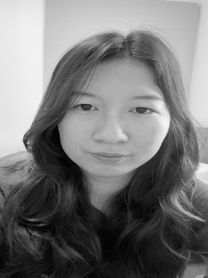
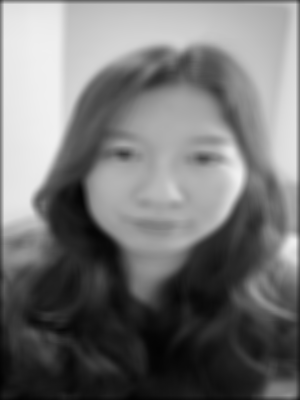
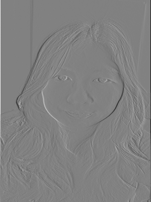
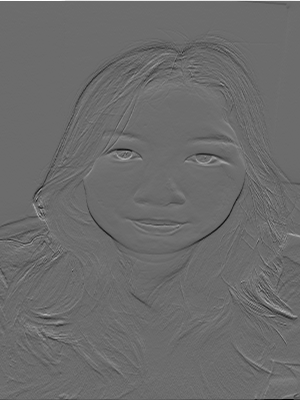
Code
def conv2d_two_loops(image, kernel, mode="same"):
kernel = np.flipud(np.fliplr(kernel)) # true convolution flips the kernel
kh, kw = kernel.shape
pad_h, pad_w = (kh - 1, kw - 1) if mode == "full" else (kh // 2, kw // 2)
padded = np.pad(image, ((pad_h, pad_h), (pad_w, pad_w)), mode="constant")
out_h = padded.shape[0] - kh + 1
out_w = padded.shape[1] - kw + 1
out = np.zeros((out_h, out_w))
for ki in range(kh):
for kj in range(kw):
out += kernel[ki, kj] * padded[ki:ki + out_h, kj:kj + out_w]
return outRuntime & boundary handling
On a 300×400 grayscale image with a 9×9 box filter: the four-loop version
took 3.153s, while the vectorized two-loop version took
0.0081s — actually a touch faster than
scipy.signal.convolve2d's 0.0208s here. That's
roughly a 390× speedup just from replacing the innermost two
loops with array slicing and broadcasting. The max pixel-wise difference
against scipy's output was 1.89×10⁻¹⁵ (floating-point
precision) for both my implementations, confirming correctness. Both my
implementation and scipy handle boundaries via zero-padding by default.
Finite Difference Operator
Partial derivatives, gradient magnitude, and a binarized edge image of the cameraman image.
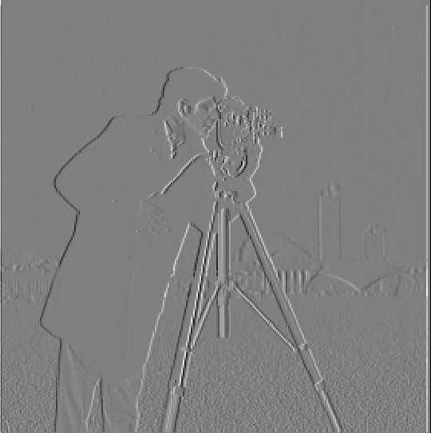
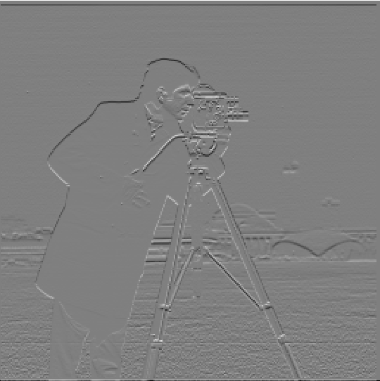
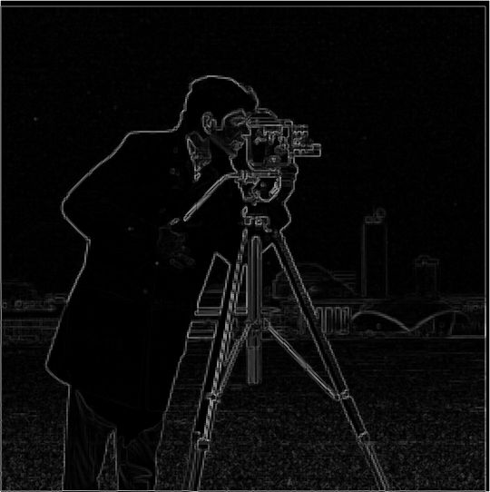
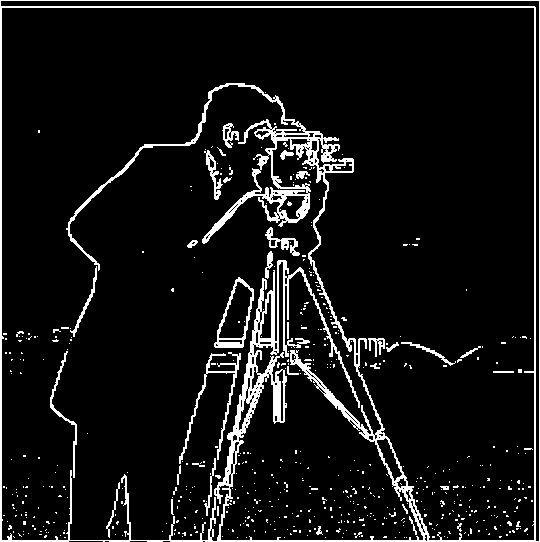
Threshold justification
I tested thresholds of 0.05, 0.1, 0.15, 0.2, and 0.3 against the gradient magnitude image. At 0.05, flat regions like the sky and grass were full of speckled noise. At 0.15, the silhouette was clean but the grass still showed noticeable noise. At 0.3, the result was very clean but started losing real detail, like parts of the distant city skyline breaking up. I settled on threshold = 0.2 as the best balance, at which exactly 8.0% of pixels are classified as edges — the person, camera, and tripod outlines stay intact while background noise is substantially suppressed.
Derivative of Gaussian (DoG) Filter
Comparing two-step (blur, then finite-difference) versus a single combined DoG filter.
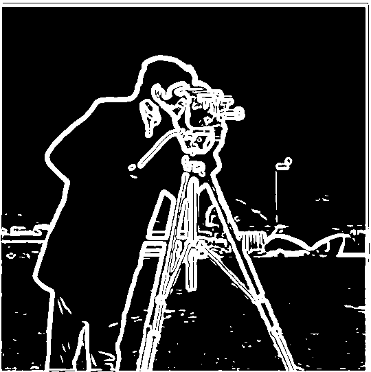
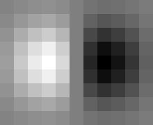
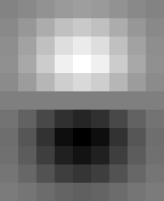
What differences do you see?
After Gaussian blurring, the edge map is noticeably cleaner — background texture in the grass and sky that showed up as speckled noise in the unblurred version (Part 1.2) is largely suppressed. The trade-off is that some fine detail is lost too, like small buttons and dials on the camera body, which blur together with their surroundings.
Verification
The two methods agree almost exactly: comparing the interior of the image (cropping out a 10-pixel border), the max difference between the blur-then- differentiate approach and the single combined DoG kernel was 6.89×10⁻¹⁶ — floating-point precision. All the (larger) discrepancy is confined to a handful of border pixels, the expected result of zero-padding being applied twice (once per convolution) versus once for the combined kernel.
# dog_x/dog_y must be built with mode="full", NOT "same" — Dx/Dy extend
# beyond the gaussian's own window, and "same" would truncate that
# extra support, making this disagree with the two-step version.
dog_x = convolve2d(gaussian, Dx, mode="full")
dog_y = convolve2d(gaussian, Dy, mode="full")
gx = convolve2d(image, dog_x, mode="same", boundary="fill")
gy = convolve2d(image, dog_y, mode="same", boundary="fill")Gradient Orientation Visualization
Gradient orientation computed without built-in angle functions, visualized with hue in HSV color space.
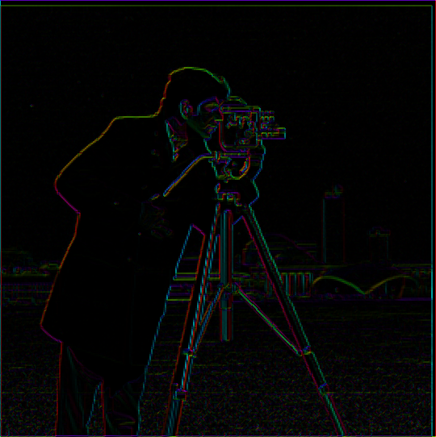
Approach
Since np.arctan2 isn't allowed, I computed the angle with
plain np.arctan(gy/gx) — which only covers a 180° range —
and manually added the quadrant corrections that arctan2
normally handles internally (adding/subtracting π depending on the
signs of gx and gy, plus special-casing gx == 0). For the HSV mapping:
Hue encodes direction (angle remapped from [-π, π] to [0, 1]),
Saturation is fixed at 1, and Value is the normalized gradient magnitude
— so flat, edge-free regions fade to black regardless of what direction
they'd nominally point in.
def gradient_orientation(gx, gy):
with np.errstate(divide="ignore", invalid="ignore"):
base = np.arctan(np.where(gx != 0, gy / gx, 0))
angle = np.where(gx > 0, base, 0.0)
angle = np.where((gx < 0) & (gy >= 0), base + np.pi, angle)
angle = np.where((gx < 0) & (gy < 0), base - np.pi, angle)
angle = np.where((gx == 0) & (gy > 0), np.pi / 2, angle)
angle = np.where((gx == 0) & (gy < 0), -np.pi / 2, angle)
angle = np.where((gx == 0) & (gy == 0), 0.0, angle)
return angleImage "Sharpening"
Deriving and applying the unsharp mask filter on the Taj Mahal image and an image of your choice.

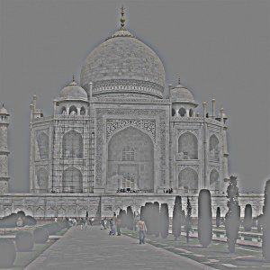
Same pipeline on an image of my choice (Yosemite), with a couple of different sharpening amounts (α):
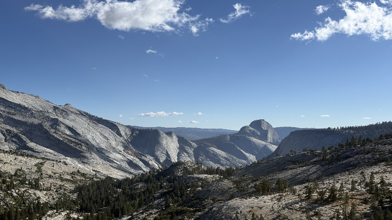
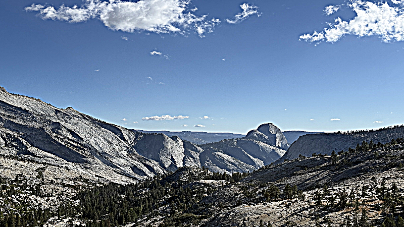
Code
def unsharp_mask_channel(channel, size, sigma, alpha):
gaussian = gaussian_kernel_2d(size, sigma)
blurred = convolve2d(channel, gaussian, mode="same", boundary="symm")
high_freq = channel - blurred
sharpened = channel + alpha * high_freq
return np.clip(sharpened, 0, 1), blurred, high_freq
Parameters used: size=15, sigma=3 (the Gaussian
blur kernel), applied with α = 0.5, 1.0, 1.5, 2.5 on Taj Mahal
and α = 1.0, 2.0 on Yosemite.
Effect of α
At α = 1.0 the Taj Mahal looks crisper without obvious artifacts. Pushing α up to 2.5 starts introducing visible halos — bright rims around the dome's edge against the sky, the classic over-sharpening artifact.
Blur-then-resharpen evaluation
I deliberately blurred the sharp Taj Mahal image, then tried to resharpen it with the same unsharp mask filter (α = 1.5). The resharpened version is somewhat closer to the original than the blurred version is — mean absolute pixel difference dropped from 0.04702 (blurred vs. original) to 0.03956 (resharpened vs. original) — but nowhere near fully recovered. This makes sense: unsharp masking can only amplify whatever faint high-frequency signal survives the blur; it can't reconstruct detail that blurring has already destroyed.

Hybrid Images
Blending the low frequencies of one image with the high frequencies of another, following Oliva, Torralba, and Schyns (SIGGRAPH 2006).
Full process — favorite result (Derek + Nutmeg)
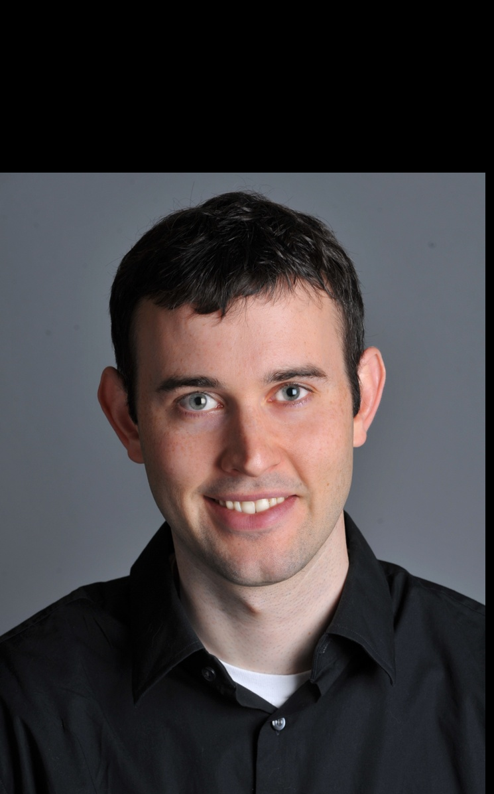
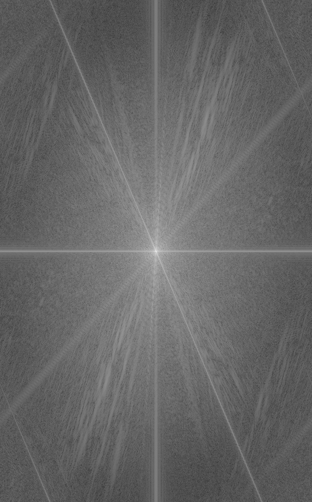
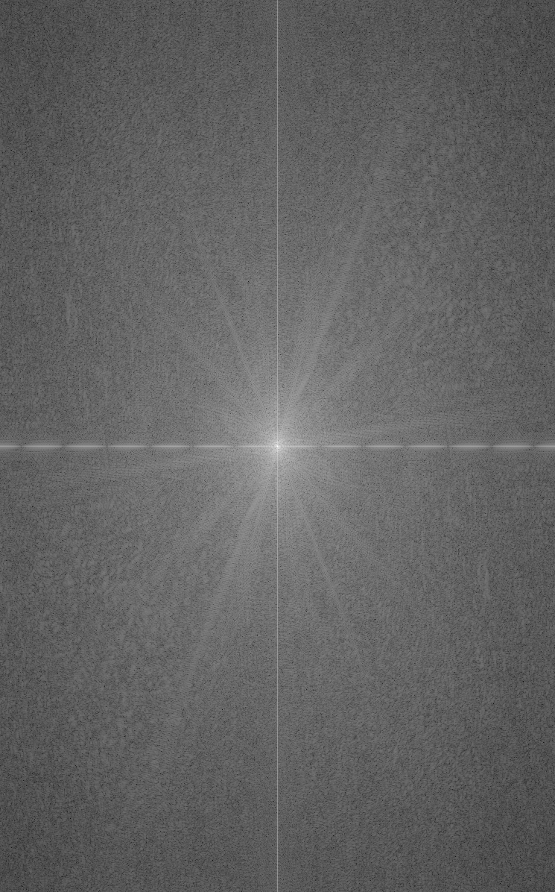
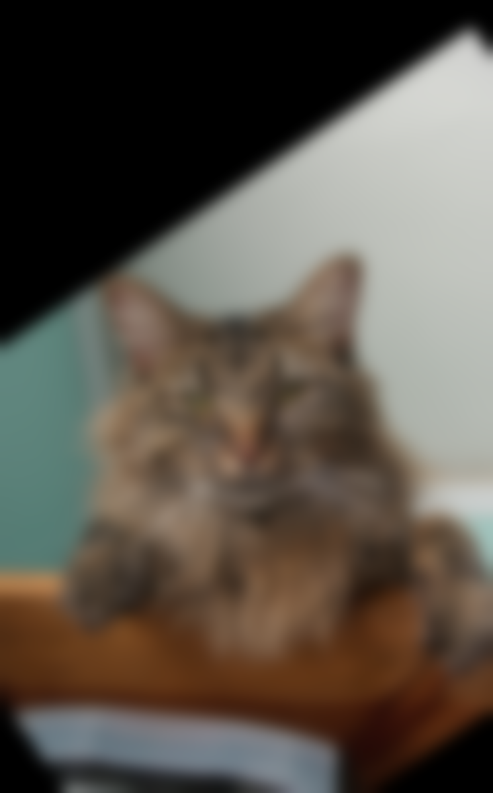
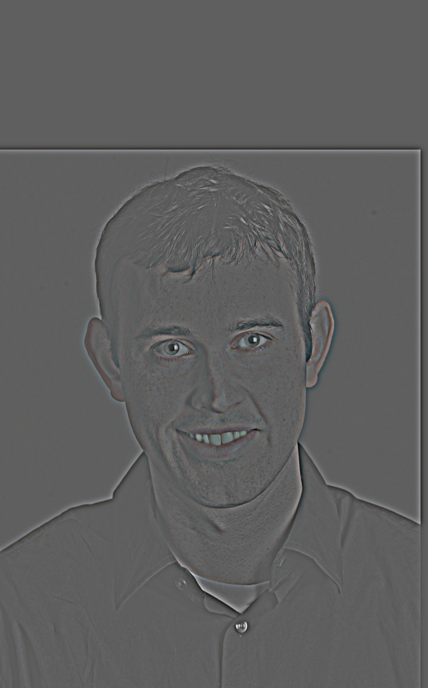
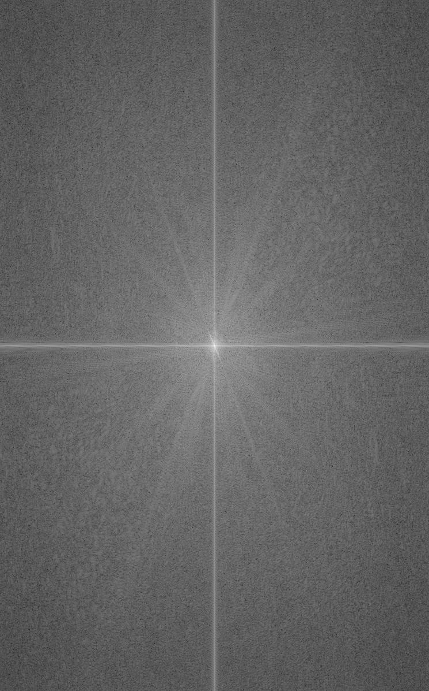
Code
def hybrid_image(im_low_source, im_high_source, sigma_low, sigma_high):
low = low_pass(im_low_source, sigma_low)
high = high_pass(im_high_source, sigma_high)
hybrid = low + high
return np.clip(hybrid, 0, 1), low, high
def high_pass(img, sigma):
return img - low_pass(img, sigma)Cutoff frequency choice
Alignment is done by clicking two corresponding points (I used the eyes) on
each image, which align_images() uses to match center, scale, and
rotation. The cutoff frequencies (sigma_low, sigma_high)
are in pixel units, so the same numbers don't transfer between image pairs of
different resolutions — I learned this the hard way when my first attempt (same
sigma values for all three pairs) left two of the three pairs completely
dominated by their high-frequency source, because the aligned image
resolutions differed by up to 7× between pairs.
Starting heuristic: sigma_low ≈ aligned_width / 25,
sigma_high ≈ aligned_width / 100, then adjusted from there by
checking the low-pass and high-pass images individually — the low-pass result
should still look like a soft, recognizable shape (not a flat color blob), and
the high-pass result should be mostly flat gray with only genuine edges
standing out (not full facial shading). Actual values used:
| Pair | Aligned size (H×W) | sigma_low | sigma_high |
|---|---|---|---|
| Derek + Nutmeg | 1202 × 741 | 12 | 5 |
| Brother + Cat | 2359 × 1646 | 35 | 12 |
| Mona Lisa + Mr. Bean | 322 × 262 | 8 | 2 |
Two more hybrid images
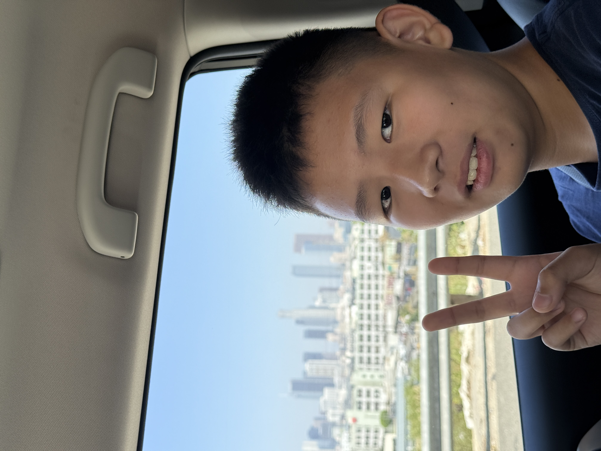
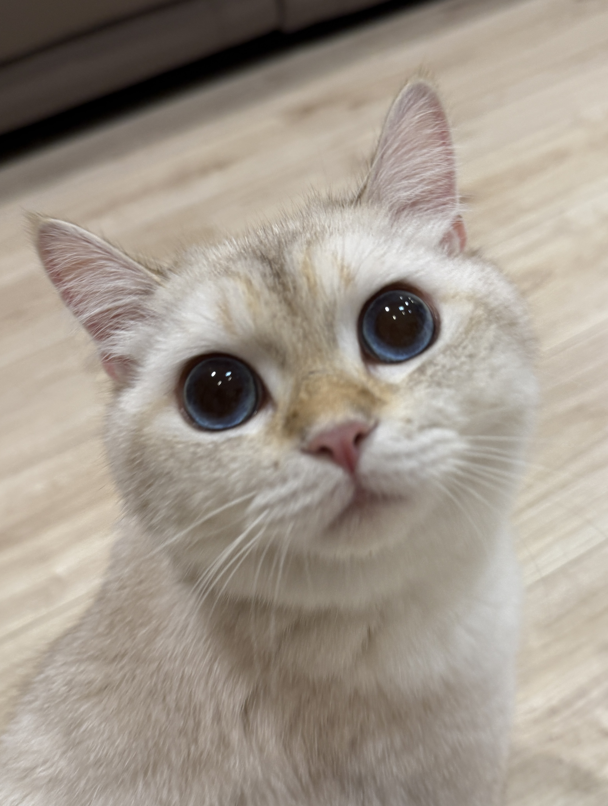
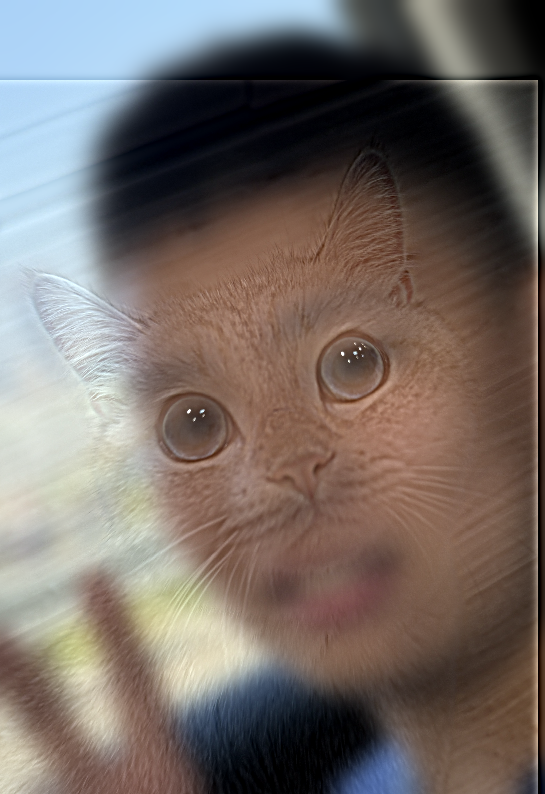
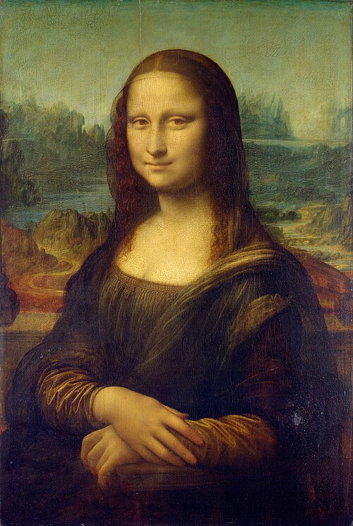
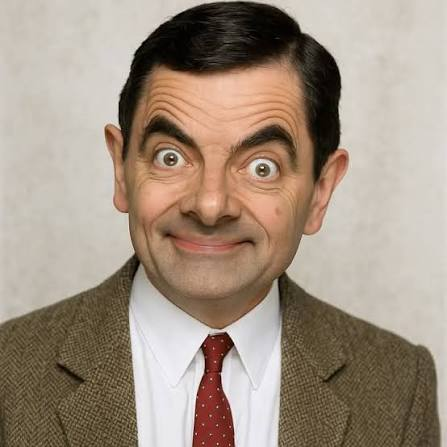
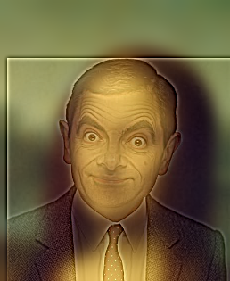
Color in Hybrid Images
Which works better?
Color works best kept in the low-frequency source. Since the low-frequency component is what dominates perception from a distance, keeping its natural color makes the "far away" impression read as a normal photograph. Adding color to the high-frequency component tends to look noisy up close — fine edges don't carry much color information in real photos anyway, so colorizing them mostly just adds chromatic speckle without helping the illusion. Color in both works reasonably but doesn't improve on low-only, since the high-frequency color contribution is essentially redundant.
Gaussian and Laplacian Stacks
Implementing the stacks themselves, then recreating Figure 3.42 (a)–(l) from Szeliski, using the apple/orange sample images.
The stacks themselves — apple (Gaussian)

apple (Laplacian)
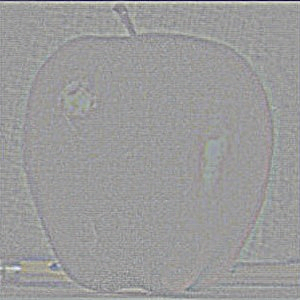
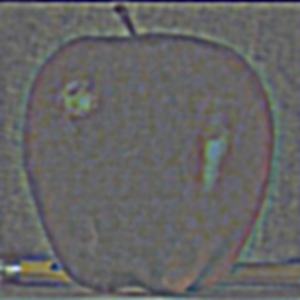
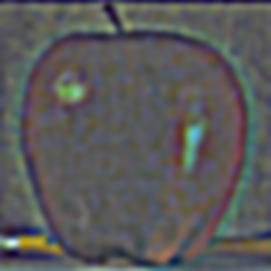
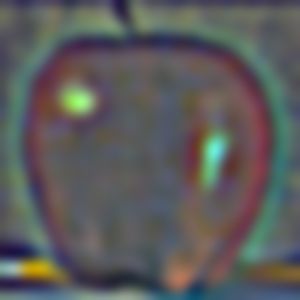
orange (Gaussian)

orange (Laplacian)
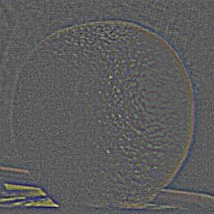
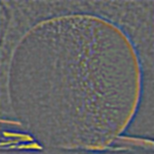
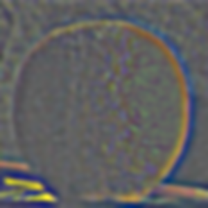
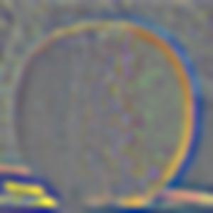
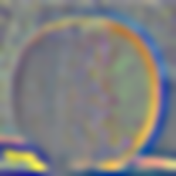

Code
def gaussian_stack(image, levels, sigma=2):
# No downsampling — each level is the same size, just more blurred
stack = [image.astype(np.float64)]
for i in range(1, levels):
blurred = gaussian_filter(image, sigma=sigma * i) # per-channel
stack.append(blurred)
return stack
def laplacian_stack(g_stack):
l_stack = [g_stack[i] - g_stack[i+1] for i in range(len(g_stack)-1)]
l_stack.append(g_stack[-1]) # final residual
return l_stack
Parameters used: levels=6, sigma=2 (per-level blur
multiplier, so level i is blurred with σ = 2×i).
A stack differs from a pyramid in that nothing is ever downsampled — every
level stays the same resolution as the original, just progressively more
blurred. Summing every level of the Laplacian stack reconstructs the original
image exactly (I verified this: max pixel difference of
1.11×10⁻¹⁶, floating-point precision). I used
scipy.ndimage.gaussian_filter rather than a direct 2D
convolution — it exploits the Gaussian kernel being separable, which matters
a lot here since building 6 levels means blurring with increasingly large
kernels.
Recreating Figure 3.42
Rows 1–3: High/Medium/Low frequency bands (Laplacian levels 0, 2, 4), each showing [apple × mask], [orange × (1−mask)], and their sum. Row 4: full reconstructions.
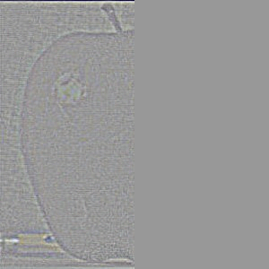
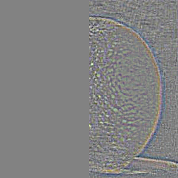
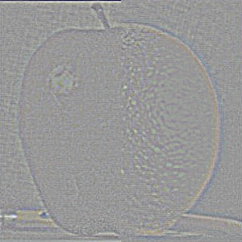
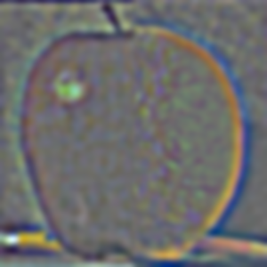
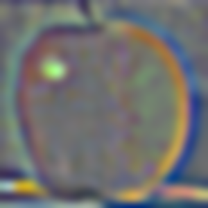
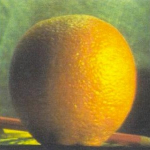
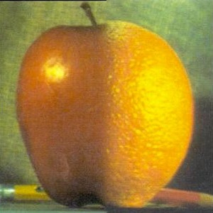
Multiresolution Blending (the Oraple!)
Blending with a mask-based Gaussian/Laplacian stack approach — a straight-seam oraple, plus two custom blends.
Oraple — straight seam


Two custom blends
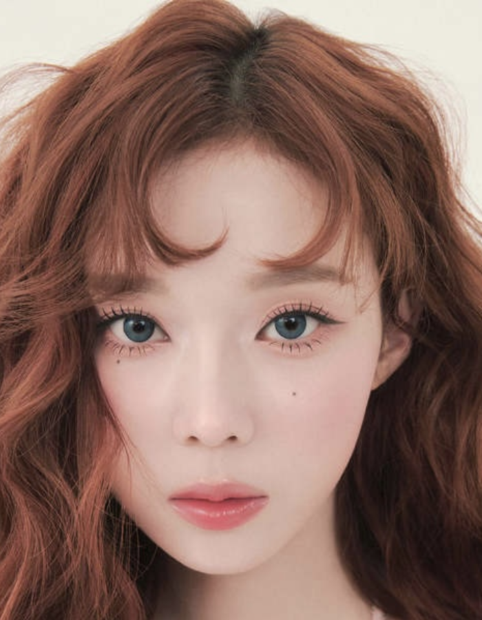
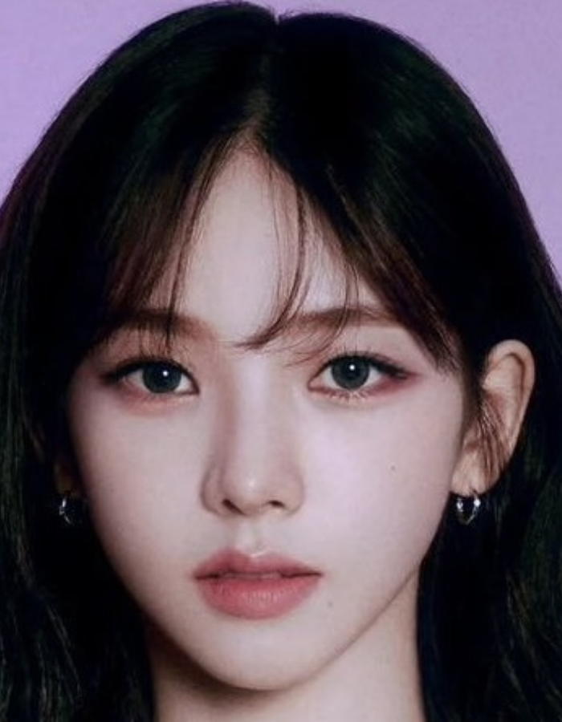
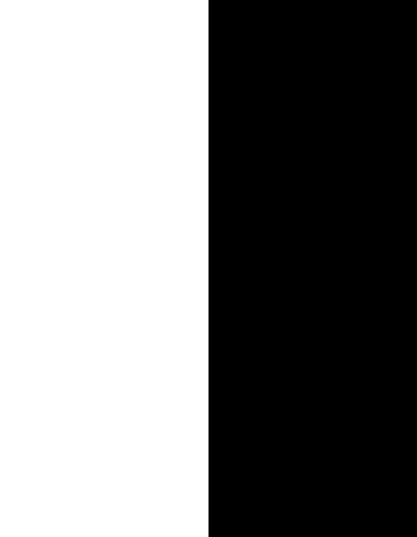
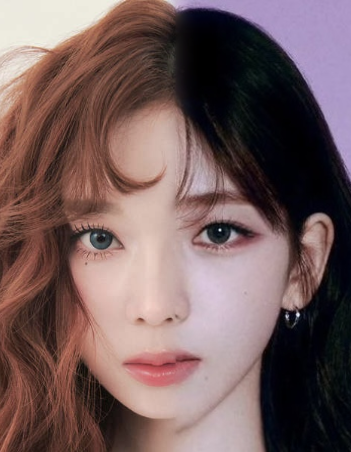
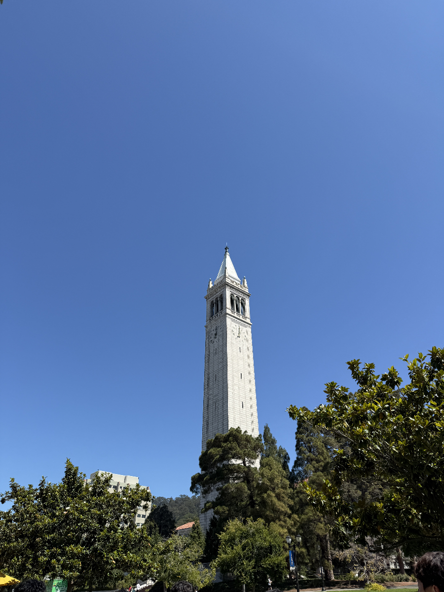
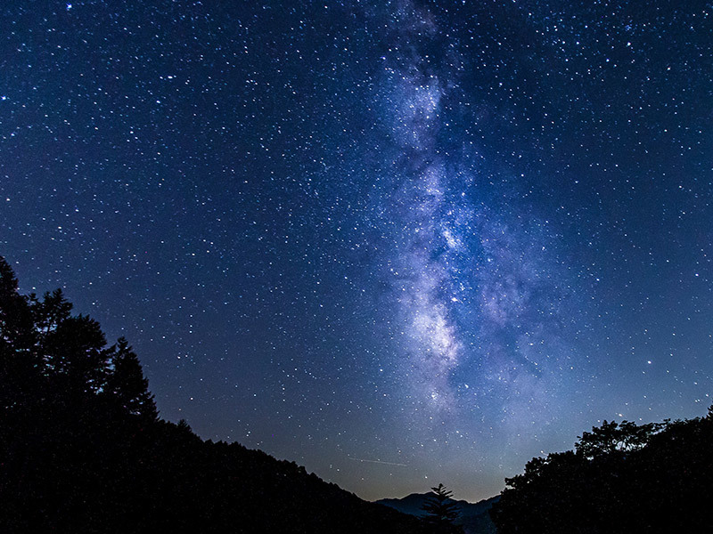
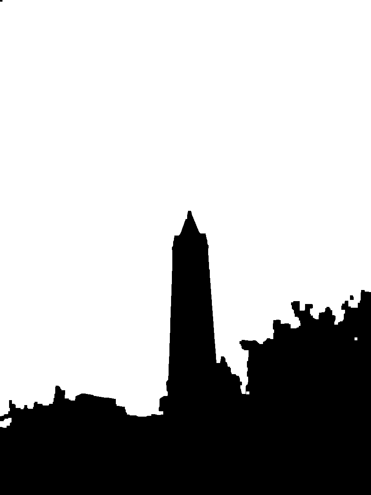

The irregular mask
For the irregular-mask blend, I replaced the Campanile's daytime sky with a starry night sky (both shown in the grid above, along with the detected mask). The mask follows the tower and trees' actual silhouette, detected automatically via HSV color thresholding rather than hand-drawn.
hsv = cv2.cvtColor(campanile, cv2.COLOR_BGR2HSV)
lower_blue = np.array([95, 90, 140])
upper_blue = np.array([140, 255, 255])
sky_mask = cv2.inRange(hsv, lower_blue, upper_blue)
My first attempt used much looser thresholds ([90,40,80] to
[140,255,255]) and mistakenly classified the tower's shadowed
(backlit) side as sky — it reflects ambient blue skylight, so its hue
is nearly identical to real sky. Sampling both regions directly showed the
real distinguishing factor:
| Region | Hue | Saturation | Value |
|---|---|---|---|
| Tower shadow (misclassified) | ~106 | ~43 | ~103 |
| Clear sky | ~110 | ~135 | ~183 |
Hue is nearly identical between the two, but saturation and value differ
sharply — so raising the lower bounds to S ≥ 90, V ≥ 140 fixed
the mask completely, without touching the hue range.
Process visualization — favorite result (campanile + stars)
Laplacian stack levels of the masked input images (similar to Figure 10 in the paper).
Why a mask, not the paper's page-226 approach
Since we're using stacks (no downsampling), there's no downsample/blur/upsample cycle to naturally soften a hard seam the way a pyramid does. Directly summing two Laplacian stacks split at a hard line would leave a razor-sharp discontinuity at every frequency band. Using a mask — itself blurred through its own Gaussian stack — means each frequency band blends over a width proportional to that band's own blur radius, producing a smooth transition at every scale simultaneously, which is what makes the seam disappear.
Parameters used for both custom blends: levels=6, sigma=4.
Color in Blending
Approach
The idea: human vision is far more sensitive to luminance (structure) than to chrominance (color), so I split the blend in YCrCb space — Y (luminance) through the normal full multiresolution stack to keep structure sharp, Cr/Cb (color) through a single, separately-tuned Gaussian blur, since color doesn't need sharp detail, just a smooth transition.
First tested on winter+karina, but their skin tones are already similar, so
the difference was nearly invisible either way — not a useful test case.
Switched to campanile+stars, whose day/night palettes differ dramatically.
My first attempt used a chrominance blur sigma=50 — wider than
the baseline's cumulative blur (sigma × levels = 4 × 6 = 24) —
which backfired: it let star-blue bleed further into the tower than
the baseline did, the opposite of the intended effect. Narrowing the
chrominance sigma to 12 (below the baseline's 24) fixed
this, giving a smoother color transition without the extra bleed. Comparing
the final baseline vs. split-treatment images: mean absolute difference
0.578 (0–255 scale), max difference 99 —
a real, reproducible effect (consistent across repeated runs), concentrated
at the tower/sky boundary rather than spread evenly across the image.
y_blend = blend_with_mask(star_Y, camp_Y, mask, levels=6, sigma=4)
wide_mask = gaussian_filter(mask, sigma=12) # narrower than baseline's 4*6=24
cr_blend = star_Cr*wide_mask + camp_Cr*(1-wide_mask)
cb_blend = star_Cb*wide_mask + camp_Cb*(1-wide_mask)Reflection
The most important thing I learned from this project
Parameters like sigma and threshold are never universal — they're relative to the actual pixel scale of the image they're applied to. I ran into this repeatedly: the same edge threshold that worked for cameraman didn't transfer to a blurred version of it; the same hybrid-image cutoff frequencies produced wildly different results across three image pairs because their aligned resolutions differed by up to 7×; and a "wider blur is smoother" intuition for the color-blending Bells & Whistle actually backfired until I checked it against the baseline's own cumulative blur radius. In every case, the fix was the same: stop guessing a number and instead inspect the intermediate result directly (the low-pass image, the high-pass image, the raw mask) to see what the parameter was actually doing, then reason about the right scale from there.